This procedure describes how to connect an instrument to the house air system using MOD 6566.
Required Materials: Do not begin this procedure until the necessary parts are at the site. DxI instruments can have one of two different lower right rear panels. One lower right panel has an air fitting for house air and the other does not. If the lower right rear panel does not have an air fitting for house air, a replacement cover must be ordered before house air can be installed. Determine whether the instrument has an air fitting on the lower right rear panel.
S/N 600500 and lower - Order the lower right rear cover P/N A32773 before beginning. The replacement cover includes the air fitting required for installing house air.
S/N 600501 and higher has the correct right rear cover with air connection fitting attached.
Eliminate replacing compressors that fail because of high usage, high humidity, or other abnormal operating conditions.
Eliminate having to pull an instrument away from an automation line to service the onboard compressors.
Note: This procedure is used during completion of MOD 6566.
Follow these requirements and specifications for this procedure:
Parameter
Requirement / Specification
Location
Customer air connection must be within 50 feet of the DxI
Pressure
50 psi (minimum)
Dedicated Air to DxI - Flow Rate
Minimum of 3.2 liters per minute at 50 psi (0.113 cfm)
Shared Air - DxI and LAS on same air source - Flow Rate
Minimum of 85 liters per minute at 90 psi (3.0 cfm)
Mechanical Interface
The air source fitting must accept or be adaptable to a 1/4-in OD pneumatic tubing
Filter and Regulator Installation
Must be wall mounted. Contact the maintenance department to have wall anchors installed.
Permission and Safety Concerns: A variety of air connection sources are encountered at customer accounts. The existing fittings or connection type might not be usable until modifications have been made to it. If the kit fittings are not usable in making the connection at the source, then work with the maintenance department or shop locally to acquire the necessary fittings.
Caution: In this procedure, an air filter-regulator assembly is attached to the wall near the house or LAS air supply.
Do not attach wall anchors or drill or create any holes in the walls. That is the customer's responsibility.
Contact the maintenance department at the account and request that they attach two wall anchors to the wall near the house air supply source.
Space the wall anchors 1-3/8 in (3.5 cm) apart and include screws with a diameter no larger than 0.212 in ( 5 mm).
The wall anchors must hold the weight of the filter-regulator assembly securely and not pull out of the wall, even if the air line from the wall regulator to the instrument is pulled or stressed.
Connect to the LAS air.
Note: All power processor automation lines (also referred to as LAS in this document) use compressed air. In situations where an automation line exists and the air system used for the LAS can supply the required volume of air at the specified pressure, connect to the air system used for the LAS. The correct place to connect is before the air-in side of the regulator that supplies air to the LAS.
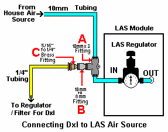
Confirm that the LAS is not being used, then pause the LAS to prevent samples or tubes from loading.
Shut off the air supply line feeding the power processor.
Cut the LAS air supply tubing 6 inches from the IN port on the LAS regulator.
Insert the 10 mm x 10 mm x 10 mm T-fitting (A) where the 10-mm tubing was cut.
Insert the 10-mm to 8-mm adaptor (B) into the 10-mm T-fitting (A).
Insert the 5/16-in end of the 5/16-in to 1/4-in adaptor (C) into the 8-mm end of the 10-mm to 8-mm adaptor (B).
Insert one end of the 1/4-in tubing from the kit into the adaptor (C).
Assemble and connect the wall-mounted air filter-regulator.
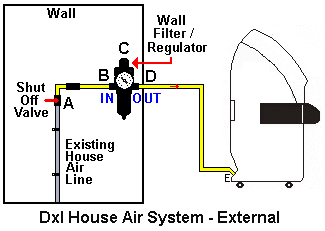
Open the large plastic bag containing the two regulators, then locate the filter-regulator and the 0–160 psi pressure gauge.
Remove the threaded plastic plug from the filter-regulator gauge (C) mounting hole using a 5/32-in hex wrench.
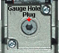
Insert the pressure gauge into the mounting hole, and tighten using a 9/16-in wrench, until the gauge is positioned with the 0 and 160 positions at the bottom.
Pull upward on the adjustment knob cover, and rotate the regulator adjustment knob counter-clockwise until the regulator valve is open completely.
Assemble the filter-regulator mounting bracket and nut (black) onto the filter-regulator with the flange holes upward. Tighten the nut securely.
Attach the filter-regulator to the wall anchors.
Connect the house (or LAS) air supply to the wall-mounted air filter-regulator port labeled IN, using the required length of black tubing from the roll in the kit.
Restore air pressure to the LAS connection unit, if it was shut off earlier.
Assemble the internal air pressure regulator.
Locate the precision regulator and the 0–60 psi pressure gauge in the kit.
Remove the round metal plug from the precision regulator gauge mounting hole using a 3/16-in hex wrench.
Note: Of the two gauge-hole plugs on the regulator, remove the plug that positions the SUP port to the left of the gauge.
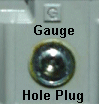
Insert the pressure gauge into the mounting hole. Using a 9/16-in wrench, tighten the gauge until it is positioned with the 0 and 60 positions toward the IN side of the regulator.
Assemble the precision regulator mounting bracket (chrome) onto the regulator with the flange holes upward (by the adjustment knob). Tighten the mounting nut securely.
Rotate the regulator adjustment knob counter-clockwise, until the regulator valve is open completely.
Connect the internal air pressure regulator.
Shut down the instrument.
Remove the lower right rear panel.
Cut the air tubing going from the compressor to the air accumulator between the internal check valve and the air accumulator 4 to 6 inches from the air accumulator.
Note: Do not cut the tubing where the label is attached. Inserting a labeled area into a fitting can cause a leak.
Insert the ends of the cut tubing into the left and right ports of the new T-fitting that comes with the kit.
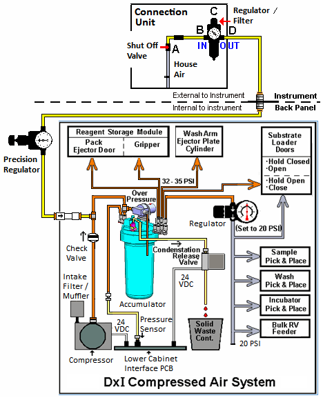
Using the screws provided in the kit, attach the regulator bracket to the bracket located (DxI 800: in front of, DxI 600: above) the intermediate waste container.
Figure 331: DxI 600 (left) and newer DxI 800 (right)
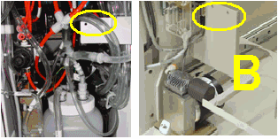
Note: For older DxI 800 instruments, remove the left front screw used to mount the intermediate waste container and accumulator jar bracket and use the screw to mount the regulator bracket horizontally.
Figure 332: Older DxI 800
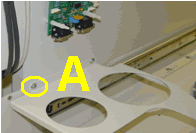
Cut a 2-in piece of black tubing from the roll in the kit. Connect one end to the regulator connection labeled OUT, and connect the other end to the check valve with arrow on the check valve pointing away from the regulator.
Figure 333: DxI 600 and newer DxI 800 (left); older DxI 800 with horizontal mount (right)
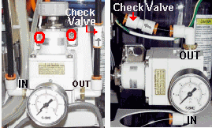
Note: The arrow on the check valve labeled Free Flow should point away from the regulator.
Cut an 18-in piece of black tubing from the roll in the kit. Connect one end to the center port of the new T-fitting. Connect the other end to the check valve.
Cut an 18-in piece of black tubing from the roll in the kit. Connect one end to the regulator fitting labeled IN. Connect the other end to the inside of the bulkhead air fitting on the lower right rear panel of the instrument (labeled F in the air system drawing).
Connect to the AU rear panel.
Connect the wall-mounted air filter-regulator port labeled OUT to the house air connection on the lower right rear panel of the instrument, using the black tubing from the kit.
Figure 334: A32774 House air connect rear panel
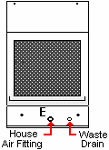
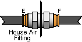
Note:
Leave sufficient tubing length so that the instrument can be moved a few feet in any direction.
The maximum validated tubing length is 50 feet.
Check the internal air compressor function.
Note: The house air system could fail. If the house air system fails, then the DxI instrument onboard compressor must start and provide air. The check valve on the output of the precision regulator prevents air from being pumped into the house air system.
Apply power to the instrument, and allow the instrument to initialize.
Verify onboard air compressor operation by verifying that the onboard compressor shuts off when the air pressure reaches 35 psi. If the onboard compressor does not operate correctly, then troubleshoot and repair the onboard compressed air system, and repeat this test.
Adjust the pressure on the wall-mounted filter-regulator to 50 psi.
Note: Turn the adjustment knob clockwise to increase the pressure.
Adjust the pressure on the internal regulator to 35 psi.
Note: Turn the adjustment knob clockwise to increase the pressure.
From the user interface, select
Diagnostics > Device Diagnostics > Analog Devices
> Analog Data
Verify that the pressure displayed on the
Analog Data screen is 34.5 psi.
If the pressure is not 34.5 psi, then adjust the internal air pressure regulator until the pressure displayed on the
Analog Data screen is 34.5 psi.
Lock the adjustment knobs on the pressure regulators.
Attach the instrument lower right rear panel.
Verify the proper operation of the house air system.
Shut down and restart the instrument (or the machine control program on the instrument) to exercise the moisture bleed valve.
Note: If the house air supply regulator is set too high (>50 psi), the increased air flow might not allow the moisture bleed valve to reduce the system air pressure sufficiently during initialization (<31 psi) and the AU machine control program might fail to start.
Perform a Prime All.
Monitor for air leaks, and verify that the on-board compressor does not operate while house air is available to the instrument.
Verify system operation.
Perform system verification as stated in the Verification of Service Repair document .
Advise the customer to inspect the condensation bowl on the bottom of the wall-mounted regulator regularly. Instruct them to drain the fluid when the fluid level is near the red line on the bowl. Have them use the drain valve on the bottom of the bowl and drain the condensation into a small container.
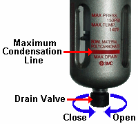
Complete the necessary paperwork to sign off MOD 6566.